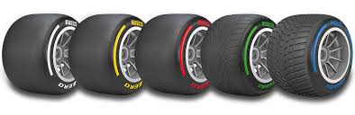
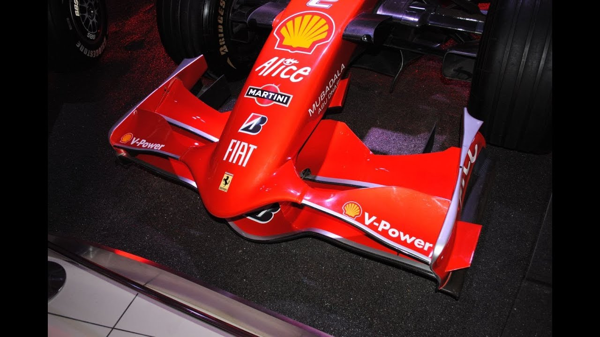

On a F1 car, there are many parts and pieces that make a Formula 1 car, from the wings keeping the car low and stable, to the wheels moving the car, to the power unit driving the car to its maximum performance, here are the parts of a F1 car.
One of the most important parts of a F1 car is the wheels, Pirelli, the main tyre manufacturer for F1, has made millions of tires for the sport, ranging from Softs, to Hards, to Inters and Wets, each tyre has a different purpose. The Soft Tyre, it has the most grip and is usually the fastest on track, but it is also the fastest tyre to deteriorate, usually lasting around 10-20 laps before losing grip. The Hard Tyre, is the least grippy tyre, but also the most durable, it usally lasts around 25-40 laps before significant grip loss. The Medium Tyre, a combination of the Soft and Hard tyre, it has good grip on the track while still having good durability, it usually lasts 20-25 laps before significant grip loss. The Intermediate tyre, the tyre which is most grippiest in the wets, but loses its grip gradually as the grooves become flatter and flatter. Full Wet Tyre, it is the best tyre used for the heaviest of rain conditions, it is slow but very durable, but there is a downside, and that is overheating, once the track becomes a little try, the wets will overheat massively causing faster grip loss.
The Wings, the part that keeps the car lowered to the ground and allows for fast cornering, this basically is an upside down airplane wing where instead of creating lift, it creates downforce, which pushes the car into the ground, if one of the wings break or the downforce disappears at high speeds, the high rpm of the wheels will cause the car to spin out, as with the case of Marcus Ericsson in 2018, when his Haas' wing got stuck in DRS mode causing his car to spin and crash when he was about to take a corner.
The Power Unit is one of the most important parts of F1 so that the engines can reach ~1000 hp giving the best performance and high speeds for the car. It also allows for energy recovery so that the batteries giving the engine that extra power to have better performance are charged faster. It has multiple parts, like the MGU-K and MGU-H which retrieves spent energy from the brake ducts and exhaust, once the ERS(Energy Recovery System) is charged and released, the car will get a boost of energy making it faster then the others.

These two parts are some of the most important safety equipment possible for a driver incase of a crash. The Halo protects the head of the driver just in case of an object flying at high speed going into the cockpit, many deaths could've been prevented with the Halo, examples of this are Senna's and Tom Pryce's deaths where objects flew at their heads and broke their skulls. The HANS device meanwhile prevents backlash incase of a hard impact, like when Max Verstappen hit the wall at 51G, but got out unscathed because of the HANS device protecting his head and neck from breaking.